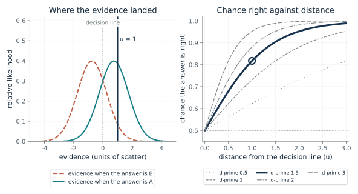
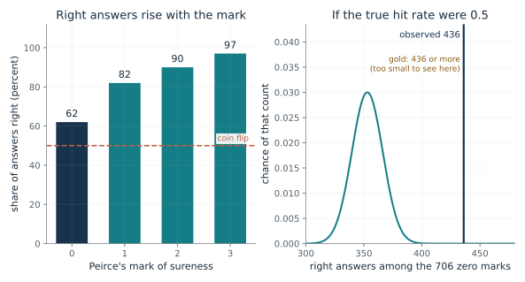
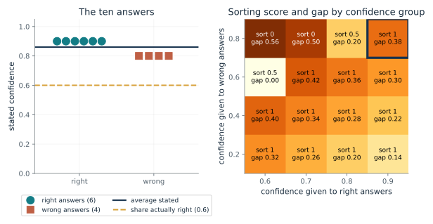
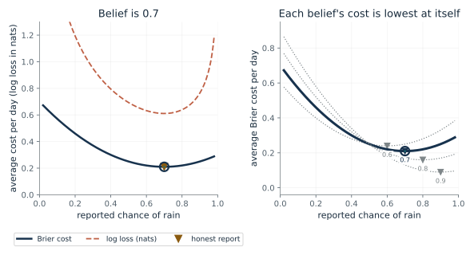
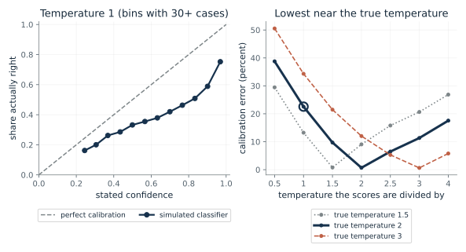
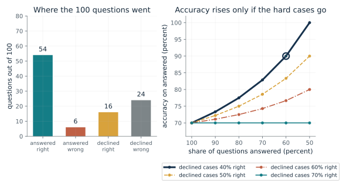

How sure should an answer be, given how far the evidence is from the line?
From Chapter 21, Peirce's marks of sureness tracked accuracy, even the zeros
If the evidence lands one unit from the decision line and d-prime is 1.5, what chance should the answer be right?
The two answers produce evidence around two typical values. A point far from the line between them is almost surely from the nearer case; a point at the line is a toss-up. With bell-shaped evidence of equal scatter, the log odds of being right grow in a straight line with the distance, with slope d-prime, so the chance follows a logistic curve.
Predict first: Before moving anything: at d-prime 1.5, will the answer be right with a chance above or below 0.9 when the evidence is two units from the line?

d-prime (how well the task separates the cases): 1.5 · Distance from the decision line (u): 1.0
What happens: At d-prime 1.5 and one unit from the line the chance is 0.818, the chapter's 0.82. At zero distance the chance is exactly one half, whatever d-prime is. Move to two units and watch the chance pass 0.9.
With d-prime 1.5 and evidence 1 units from the line, the model says the answer is right with chance 0.818. At the line itself the chance is one half, and it climbs faster for a larger d-prime.
- Chance the answer is right
- 0.818
- Chance it is wrong
- 0.182
- Odds right to wrong
- 4.48
- d-prime times u
- 1.5
It gives a reason a stated confidence could carry information at all, and shows what a well-behaved confidence report looks like: at the line it says one half.
A model of how a judge's sureness could follow the evidence in a task such as Peirce's weights. The chapter does not claim the brain computes this.
A specification for a classifier whose confidence follows the same logistic form; real networks need to be checked against outcomes, not assumed to obey it.
Show the calculation
P(correct | u) = 1/(1 + e^(-d' u)) = 1/(1 + e^(-1.5 x 1)) = 1/(1 + 0.223) = 0.818. Odds right to wrong = e^(d' u) = 4.48.
The equations and symbols
- u
- distance of the evidence from the decision line, in units of the scatter of the evidence; zero or more
- d'
- d-prime: the gap between the typical evidence for the two answers divided by the scatter
- P(correct | u)
- the chance the answer is right given that distance
Bell-shaped evidence with the same scatter for both cases, equal prior chances, and a decision line halfway between the two typical values. Peirce and Jastrow fitted a different formula to their average marks; this one is a model of how confidence could follow evidence.
Check your understanding: At d-prime 3 and distance 1, what is the chance, and what are the odds of right to wrong?
Book source: Chapter 21, Peirce's marks of sureness tracked accuracy, even the zeros. Illustration C21-D01. Formula. Book formula. The d-prime 1.5 and distance 1 example, and the chance of 0.82, are the chapter's; every other pair of values is a choice for exploration, not data.
Did Peirce's zero marks carry any information?
From Chapter 21, Peirce's marks of sureness tracked accuracy, even the zeros
Peirce marked zero (no preference) on 706 judgments and 436 were right. Could a true hit rate of one half produce that?
If every zero-marked answer had a fixed chance q of being right, the count right would vary around 706 times q with a spread of about 13 or less. A count of 436 sits more than six spreads above 353, the coin-flip expectation. The tail sum adds up every count from 436 to 706 to measure how unusual that is.
Predict first: Before moving the slider: if the true hit rate on zero marks were 0.6, would 436 right of 706 be rare or ordinary?

Assumed true hit rate on zero marks: 0.5
What happens: At a true hit rate of one half, 436 or more right of 706 has chance about 2.2 in 10 billion. The zeros were not coin flips, as the chapter says. The count is ordinary for a rate near 0.62.
Of Peirce's 706 zero marks, 436 were right, 61.8 percent. If the true hit rate were 0.5, about 353 would be right, and 436 or more would turn up with chance 2.22e-10. This is a binomial calculation on the printed tallies, not a re-analysis of the 1885 data.
- Observed share right at mark 0
- 61.8 percent
- Count expected at this hit rate
- 353
- Chance of 436 or more
- 2.22e-10
- Zero marks as a share of 1,125
- 62.8 percent
It is the earliest evidence in the chapter that a judge's sureness, even at its lowest mark, can carry information about being right.
A person's reported sureness was linked to accuracy. This is a record of reports, not of neural activity, and two people were tested.
The same check applies to a machine: take the cases at its lowest confidence and ask whether it still beats chance.
Show the calculation
Observed 436/706 = 0.618. Expected count at hit rate 0.5 = 706 x 0.5 = 353. P(X >= 436) = sum over k from 436 to 706 of C(706, k) 0.5^k (1 - 0.5)^(706 - k) = 2.22e-10.
The equations and symbols
- X
- the number of right answers among the 706 zero-marked judgments
- q
- the assumed true chance of a right answer on a zero-marked judgment
- C(706, k)
- the number of ways to choose which k of the 706 were right
The 706 judgments are treated as independent trials with one hit rate. That is a simplification: they came from one person over a long series. The tally is Peirce's alone (one person, 1,125 judgments, one weight task); the whole study was two people. It shows nothing about how confidence is made.
Check your understanding: At a hit rate of 0.6, how many of the 706 would you expect to be right, and is 436 above or below that?
Book source: Chapter 21, Peirce's marks of sureness tracked accuracy, even the zeros. Illustration C21-D02. Reported result. The tallies are the chapter's, quoted from Peirce and Jastrow's 1885 footnote: 706 zero marks among 1,125 judgments, 436 right, and 62, 82, 90 and 97 percent right at marks 0 to 3. The binomial tail is the companion's own calculation on those printed counts; the authors did not report it.
Can confidence sort perfectly and still be wrong about its numbers?
From Chapter 21, One fitted number cut a network's calibration error from 16.53 to 1.26 percent
Ten answers, six right and four wrong. How do sorting and calibration behave as you change the confidence given to each group?
Sorting asks only about the order of the confidences. Calibration asks whether the numbers equal how often answers are right. Rater A has the right order and the wrong scale. Rater B has the right scale and no order. The Brier score punishes both defects, which is why a rater that sorts perfectly can still lose to one that states the base rate.
Predict first: Rater A gives 0.9 to right answers and 0.8 to wrong ones. Rater B says 0.6 every time. Which has the better sorting score and which the better Brier score?

Confidence given to right answers: 0.9 · Confidence given to wrong answers: 0.8
What happens: A sorts perfectly (score 1) but states an average of 0.86 against a hit rate of 0.6, so by group it misses by 0.38 (the 0.9 group is all right, the 0.8 group all wrong), and its Brier score is 0.262. Now set 0.6 and 0.6: nothing is sorted (0.5), yet the numbers match the hit rate (gap 0) and the Brier score is 0.24, better than A's.
Right answers 0.9, wrong ones 0.8: sorting score 1; the numbers average 0.86 against a hit rate of 0.6, but by group they miss by 0.38 (0 would be calibrated). An average can hide a group-by-group miss. Brier score 0.262.
- Sorting score
- 1
- Average stated confidence (hit rate 0.6)
- 0.86
- Gap by group (0 is calibrated)
- 0.38
- Brier score (lower is better)
- 0.262
A reviewer who can inspect only a fixed share of cases needs sorting. One who acts on a cost threshold needs the numbers to be right. Both checks are needed before trusting a confidence report.
Peirce's marks were tallied by hit rate at each mark, a sorting-style check. They were never tested for whether a mark stood for a stated chance.
A machine's confidence can be graded on both counts, as Guo and colleagues did for calibration.
Show the calculation
Sorting: of the 6 x 4 = 24 right-wrong pairs, a right answer with higher confidence counts 1, a tie 1/2: score 1. Average stated = (6 x 0.9 + 4 x 0.8)/10 = 0.86; hit rate 6/10 = 0.6; average gap 0.26. Gap by group = 0.6 x |0.9 - 1| + 0.4 x |0.8 - 0| = 0.38. Brier = (6 x (1 - 0.9)^2 + 4 x 0.8^2)/10 = 0.262.
The equations and symbols
- c_right, c_wrong
- the stated confidence on a right answer and on a wrong answer
- sorting
- chance a right answer gets higher confidence than a wrong one, ties counted half; 0.5 means no advantage
- BS
- the Brier score, the average squared gap between stated confidence and the outcome (1 right, 0 wrong); lower is better
- gap by group
- the companion's own check: group the answers by the confidence given, compare each group's stated confidence c_g with its share right h_g, and weight by the group's share n_g/n of the answers; 0 means calibrated on this case
Every right answer gets one confidence value and every wrong answer another, so the sorting score is 1, 0.5 or 0, and the groups for the calibration check are the two confidence values (or one group when the two are equal). Real raters give varied numbers and need more groups; this reduces the case to its logic.
Check your understanding: Give right answers 0.8 and wrong answers 0.2. What are the sorting score and the average stated confidence, and is the rater calibrated?
Book source: Chapter 21, One fitted number cut a network's calibration error from 16.53 to 1.26 percent. Illustration C21-D03. Constructed example. Constructed example adapted by the book from Fleming and Lau (90 percent on right answers, 80 percent on wrong ones, 60 percent right). The Brier score for the settings is the companion's calculation. The gap by group (cases grouped by the confidence given, each group's stated confidence compared with its share right, weighted by group size) is the companion's own simple version of the chapter's group-by-group check, not a number from the book or from Fleming and Lau. The other grid values are choices for exploration.
Why does an honest probability score best?
From Chapter 21, Brier's 1950 score for weather forecasters rewards honest probabilities
A forecaster believes the chance of rain is 0.7. What does reporting 0.5 or 0.9 cost her, compared with reporting 0.7?
If the event happens with chance b, the expected cost of announcing q is b(1-q)^2 + (1-b)q^2. Expanding gives b(1-b), the irreducible uncertainty, plus (q-b)^2, a penalty that is zero only at q = b. The log-loss curve also bottoms out at q = b, but it climbs steeply as the report nears 0 or 1.
Predict first: She believes 0.7. Which costs more per day, reporting 0.5 or reporting 0.9?

Forecaster's true belief: 0.7 · Reported chance of rain: 0.7
What happens: Reporting 0.9 costs 0.25 a day, against 0.21 for the honest 0.7. Change the report to 0.5 and it costs 0.25 too. Both shadings are 0.2 from her belief, and the extra cost is 0.2 squared, 0.04.
A forecaster who believes the chance is 0.7 and reports 0.7 pays 0.21 a day in squared error, against 0.21 for reporting the belief. The extra cost is the squared distance between report and belief, 0.
- Average Brier cost of this report
- 0.21
- Cost of the honest report
- 0.21
- Extra cost of shading
- 0
- Average log loss of this report
- 0.611
A score that rewards hedging or overstatement would teach forecasters, and models, to misreport. This one does not, though it cannot make a system actually hold accurate beliefs.
Nothing here says a brain scores itself this way.
Machines are trained on log loss, a relative of the Brier score that is also honest but harsher on confident misses. Guo's networks were trained on it and still ended overconfident.
Show the calculation
Cost = 0.7 x (1 - 0.7)^2 + 0.3 x 0.7^2 = 0.21. Honest: 0.7 x 0.3 = 0.21. Cost - honest = (0.7 - 0.7)^2 = 0.
The equations and symbols
- b
- the forecaster's true belief about the chance of rain
- q
- the chance she reports
- cost
- the squared gap between the report and what happened (1 if it rained, 0 if not), averaged over days
The forecaster's belief is accurate, so rain follows it on average. The score is the one-event Brier score; Brier's 1950 version doubled it. Honesty here means the report that minimizes expected cost; it does not show anyone is honest.
Check your understanding: For a forecast of 0.99 on an event that does not happen, what are the squared error and the log loss? And for 0.60?
Book source: Chapter 21, Brier's 1950 score for weather forecasters rewards honest probabilities. Illustration C21-D04. Formula. Constructed example from the chapter: belief 0.7, costs 0.21 for 0.7 and 0.25 for 0.5 or 0.9. The log-loss curve and the algebraic split into belief variance plus squared distance are the companion's additions. The chapter's log-loss check (0.99: 0.98 squared error, 4.61 log loss; 0.60: 0.36, 0.92) is quoted in the check below.
Can one number repair a network's overconfidence?
From Chapter 21, One fitted number cut a network's calibration error from 16.53 to 1.26 percent
If a classifier's scores are too sharp, what happens to its calibration error and its predictions when every score is divided by one temperature?
The top percentage is the largest of the converted scores. Dividing all scores by T above 1 shrinks the gaps between them, so the top percentage falls, yet the largest score stays the largest, so the predicted class is unchanged. Choosing T so that the stated confidences match the share right in each group gives the fix; in this simulation the matching value is the one the labels were drawn with.
Predict first: If the simulator's own temperature is 2, which scaling temperature do you expect to give the smallest calibration error?

Simulator's own temperature (how overconfident the raw scores are): 2.0 · Temperature the scores are divided by: 1.0
What happens: With the scaling temperature equal to the simulator's, 2, the calibration error falls to a fraction of a percent, against a much larger error at temperature 1. Accuracy and every predicted class are exactly as before.
On 20000 simulated cases, dividing the scores by 1 gives calibration error 22.6 percent when the simulator's own temperature is 2. Accuracy stays 43.2 percent and no predicted class changes. A simulation is a construction, not a measurement of any real network.
- Calibration error (percent)
- 22.6
- Average confidence (percent)
- 65.8
- Accuracy (percent)
- 43.2
- Predicted classes changed by scaling
- 0 of 20000
It shows calibration can be repaired without changing the sorting of cases or the answers. It is also a reminder that the fix is fitted on held-out cases and may fail on different data.
No study in the chapter claims brains use a rescaling like this.
A post-hoc recalibration of a classifier's scores, fitted on held-out cases. The simulation is a specification of the idea, not a model of any real network.
Show the calculation
Confidence = largest of softmax(score/1). Error = sum over 15 equal bins of (cases in bin/20000) x |share right - average confidence| = 0.226. Seed 2026; 10 classes; labels are drawn from softmax(score/2).
The equations and symbols
- z_k
- the raw score for class k, before conversion to percentages
- T
- the temperature, one number dividing every score; above 1 spreads the percentages out
- ECE
- calibration error: the average gap between share right and stated confidence across 15 confidence groups, weighted by group size
- B_b, N
- the cases in group b, and the total number of cases
Labels are drawn from softmax(score/true temperature), so the raw softmax is overconfident by construction and the right temperature is known. Real networks have no such clean structure, and the chapter notes the fix slightly hurt on a text collection (Reuters) and assumed one data source. No study here says brains use such a repair.
Check your understanding: In the simulation with true temperature 2, does scaling by 4 repair the overconfidence, over-correct it, or do nothing?
Book source: Chapter 21, One fitted number cut a network's calibration error from 16.53 to 1.26 percent. Illustration C21-D05. Simulation. Reported result: Guo and colleagues found ResNet-110 on CIFAR-100 had calibration error 16.53 percent, cut to 1.26 percent by one fitted temperature, with predicted classes unchanged. The picture is NOT that experiment: it is a seeded simulation (seed 2026, 20,000 cases, 10 classes) built so that one temperature is exactly right.
When a model declines the hard questions, what does its accuracy mean?
From Chapter 21, Monkeys with a sure bet and patients with front-of-brain damage
A model gets 70 of 100 right. If it declines some questions, how does its accuracy on the rest change?
Of the 70 right answers, the model gives up r by declining and keeps the rest. Its accuracy on the answered cases is the remaining right answers divided by the remaining questions. If the declined cases were right as often as the average, accuracy stays 70 percent while coverage falls. Only declining cases that are mostly wrong raises it.
Predict first: Suppose the model declines 40 questions and 70 percent of them would have been right, the same as its average. Will its accuracy on the remaining 60 go up, go down or stay?

Questions declined: 40 · Share of the declined that would have been right: 0.4
What happens: Declining 40 cases of which 16 (40 percent) would have been right leaves 54 of 60, 90 percent, at 60 percent coverage. Change the declined share to 0.7 and accuracy stays at 70 percent: declining easy cases buys nothing.
Declining 40 of 100 questions, with 40 percent of those declined cases right anyway, leaves 54 right of 60 answered, 90 percent, at 60 percent coverage. Accuracy on the answered cases must always be reported with the share answered.
- Share answered (percent)
- 60
- Accuracy on answered (percent)
- 90
- Right answers given up
- 16
- Wrong answers avoided
- 24
A 90 percent figure means little without the share answered, and without the right answers given up. The same logic applies to a reviewer deciding which cases to send for human checking.
In Kiani and Shadlen's task, monkeys took a sure bet more often on weak evidence and were more accurate on trials where they passed it up. The authors' account is correlational and low-level; nothing here simulates it.
A model that can decline, graded on answered cases alone, can look better than it is; the chapter's Kadavath paper did not test declining.
Show the calculation
Right among declined = 40 x 0.4 = 16. Right among answered = 70 - 16 = 54. Answered = 100 - 40 = 60. Accuracy = 54/60 = 0.9.
The equations and symbols
- d
- the number of questions declined
- r
- how many of the declined questions the model would have got right
- coverage
- the share of questions the model actually answered
The number of declines and the share of declined cases that would have been right are set by hand. Not every pair is possible: the declined cases cannot hold more than the 30 wrong answers. Which cases a real model declines is the whole question, and this does not model it.
Check your understanding: Decline 20 questions of which 40 percent would have been right. What is accuracy on the answered cases and the coverage?
Book source: Chapter 21, Monkeys with a sure bet and patients with front-of-brain damage. Illustration C21-D06. Constructed example. Constructed example: the chapter's imagined model with 70 of 100 right that declines its 40 hardest cases (16 right), giving 54 of 60. The other declines and hit shares are choices for exploration. Kiani and Shadlen's monkeys are not simulated.
Mathematical illustrations use the book's formulas with disclosed small examples. Each interactive choice shows a result computed from the same calculations as the chapter notebook. A simulation is not a measurement, and for a brain the mathematics is a model: a picture illustrates a result, and the assumptions determine its scope. Review copy, brain-computer partnership revision of 1 november 2026.